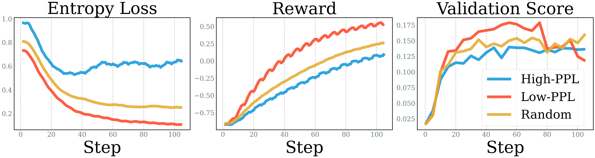
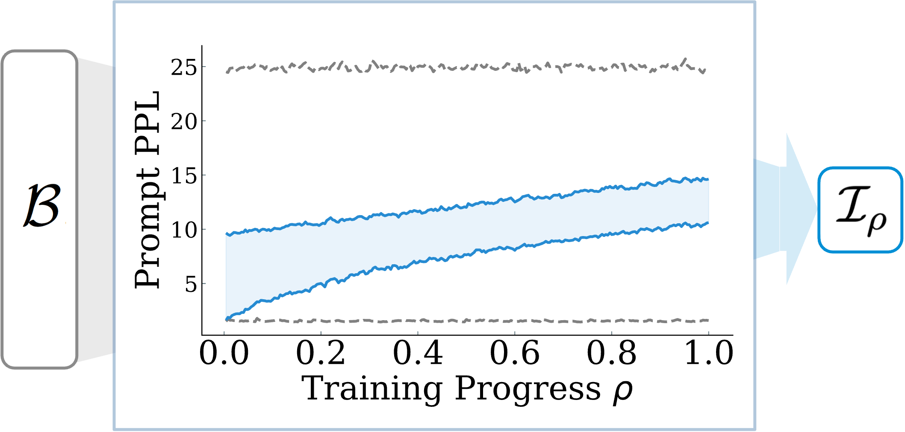

1. The Problem
- Costly: Standard RLVR generates thousands of rollouts.
- Inefficient: Many samples are too easy or too hard (zero advantage).
- Goal: Data-efficient RLVR training using data intrinsic properties.
2. Preliminary Analysis
PLACEHOLDER
Save image as:
figure_a.png
'">
Save image as:
figure_a.png
3. Method: Online Prompt Selection
Strategy: Prompt Perplexity
Use perplexity as a proxy to select from a candidate batch $\mathcal{B}$ to the actual batch $\mathcal{I}_{\rho}$ at every training step. Train on Low PPL to High PPL prompts.
PLACEHOLDER
Save image as:
figure_a.png
'">
Save image as:
figure_a.png